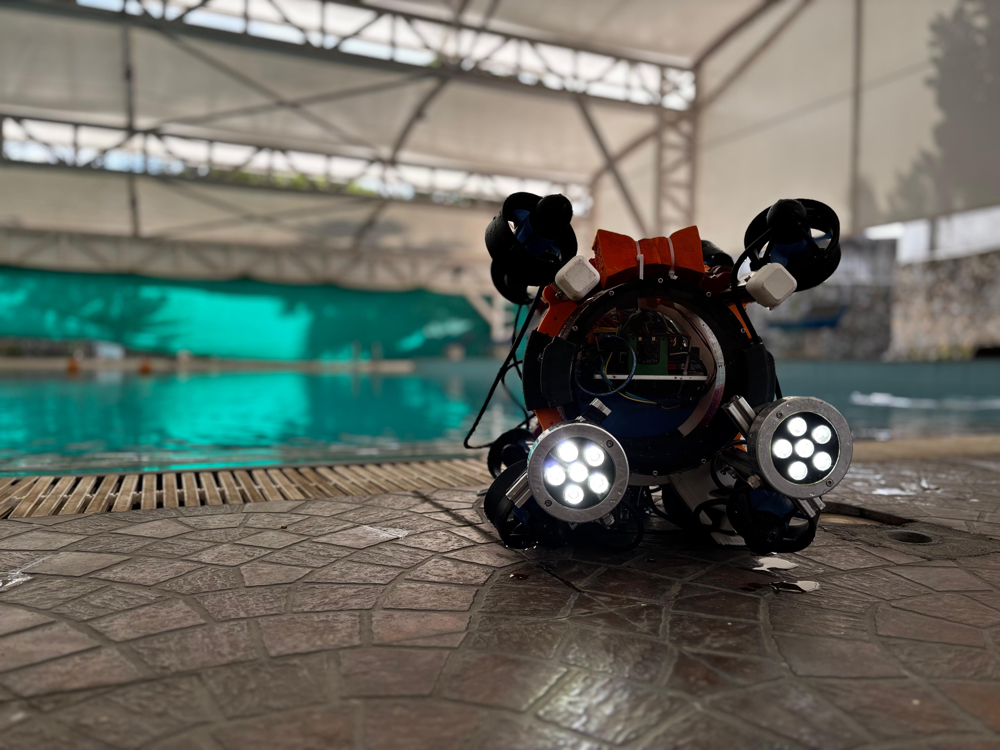

A collection of work across computer vision, robotics, machine learning, and software engineering.

Designed the full computer vision perception stack for Team Dreadnought's AUV. Custom YOLO-based object detection, sonar preprocessing, and real-time inference for underwater navigation and task execution at international competitions.
View CodeReal-time hand-tracking system to control a 3-DOF robotic arm using hand gestures. Built end-to-end using MediaPipe for landmark detection, OpenCV for the vision pipeline, and PyFirmata for Arduino servo control. Includes dual-hand tracking and joint-angle mapping — validated in hardware at Coratia Technologies.
View CodeStructured learning repo documenting a ground-up deep learning curriculum — from NumPy fundamentals and neural networks from scratch to PyTorch tensor operations and model training. 46 commits of hands-on notebooks covering backprop, CNNs, and transfer learning.
View CodeRBI Payment Systems data ingestion and ML forecasting pipeline. Scrapes the RBI DBIE portal via Playwright, parses Excel data into Parquet, and runs Prophet time-series forecasting on credit and debit card volumes. Credit card model achieved 2.1% MAPE. Includes a production pipeline architecture design doc.
View CodeAgricultural intelligence platform built for Smart India Hackathon. A JavaScript-based web app providing farmers with crop recommendations, disease detection guidance, and market price data. Contributed to the computer vision and backend data pipeline components of the team project.
View CodeTrained and deployed a custom YOLO model on a domain-specific dataset using Roboflow for annotation and labelling. Optimised inference for real-time performance on edge hardware — directly applied in the AUV Mira competition perception stack.
View CodeNo projects found for this filter.